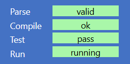

The main pane within the IDE is the 'code editor`.
When entering, editing, or just navigating (browsing) through, different sections of code will be highlighted at two different levels:
whole instruction(s) or an individual field within an instruction.
Instructions
The following show examples of instructions being highlighted.
Here a single instruction is highlighted:
+main1variable grname? set to newBlockGraphics()expression?2variable gridname? set to emptyArray<ofBoolean>expression?3call fillRandomprocedureName?(gridarguments?)4+while truecondition?5set grvariableName? to updateGraphics(grid, gr)expression?6call gr.displayprocedureName?(arguments?)7set gridvariableName? to nextGeneration(grid)expression?8call pauseprocedureName?(50arguments?)9end whileend main
Here a container-instruction is highlighted. The highlight shows the full extent of the instruction, indicating the sequence of other instructions that it contains, which are all indented by two characters:
+while truecondition?5set grvariableName? to updateGraphics(grid, gr)expression?6call gr.displayprocedureName?(arguments?)7set gridvariableName? to nextGeneration(grid)expression?8call pauseprocedureName?(50arguments?)9end while
It is also possible to select multiple instructions (to move, or delete them, together), for example:
+while truecondition?5set gvariableName? to g.withText(x, y, "*", red, black)expression?6call g.displayprocedureName?(arguments?)7call pauseprocedureName?(100arguments?)8set gvariableName? to g.withBlock(x, y, black)expression?9let dirname? be randomInt(0, 3)expression?10set x, yvariableName? to updateCoordinates(x, y, dir)expression?11end while
The following example shows a single instruction that has been formatted over multiple lines - either because it is too long to fit on one line, or because the editor formats that instruction over multiple lines for readability. Note that the second and subsequent lines are indented by just one character:
let bname? be newCircleVG() with cx set to i*5 + 2, cy set to 75, r set to 1, fill set to -1, stroke set to whiteexpression?5
Fields
Instructions consist of fixed (or 'templated') code - keywords and sometimes symbols - plus a number of 'fields' which is where the user enters code that define specific details for that instruction.
When the field is highlighted it will be highlighted with a background colour and a thin black border. This indicates that the user may now enter or edit code in that field, for example:
variable name? set to xexpression?13
A green background (as above) indicates that the text in field is valid for that field. An amber background indicates that the text is not complete
but that additional text could be added to make it valid. Commonly, the field will contain a prompt that suggests what else might be needed, and/or
a drop-down list of 'symbols' that might be valid for the field - though it is not guaranteed that all those options will then
compile:
variable xname? set to expressionexpression?3
A red background indicates that the contents of the field are not valid for that field. In the following example a variable name cannot contain a bracket:
variable y(name? set to 15expression?4
If a field background turns red as you type, it is best to hit Backspace until it goes green or amber again, so that you can identify the first character that caused the issue.
If the background to a field is grey, it means that that field is optional - you may enter valid text or move on to the next field, or the next instruction.
Adding Instructions into a program
At various places in the code you may see a 'new code selector', for example:
+main1new code call each for if let print repeat set throw try variable while #end main
which indicates that new instruction(s) may be created there. When the line containing 'new code' is given focus it
changes form to show the list of instructions that you may insert, for example:
new code
main procedure function test constant #
Using a selector to insert a new instruction
When a new code selector has focus (for example as shown above)
in most cases you can type just the first character of the instruction to be inserted. And you will then see
the template for that instruction including any mandatory and/or optional fields.
For example, given the initial list shown above, typing f will result in this being inserted:
+function namename?(parameter definitions?) returns Type?2new code each for if let repeat set throw try variable while #return expression?3end functionnew code procedure function test constant enum record class abstract interface #
Note that when an instruction is inserted is is followed by a 'new code' selector, and if, as in the example above, the inserted instruction
template is for a container instruction then the template will contain its own 'new code' selector for inserting further instructions within it.
Where two or more instruction start with the same letter(s) typing the initial letter will filter the options.
For example, if the initial list were:
new code call each for if let print repeat set throw try variable while #
then after typing t you will see:
tnew code throw try
and the desired instruction can be selected by then typing the second character (h or r).
In the following example, starting from this member selector:
Why do the options I can see differ from those shown here?
The specific list offered may depends upon various factors including:
The specific context where the 'new code' is located
What other instructions already exist in that context
Your individual permissions determined by your User profile
which means that you won't necessarily see all the instructions shown in this explanation. However, in general there are three
distinct forms of 'new code selector': the global selector, the statement selector, and the member selector.
Global selector
The global selector appears only at 'global' level - in other words when the 'new code' is located directly within the file,
rather than within container instruction. When given focus, it will list the global instructions that
you may insert. This is the full list:
new code main procedure function test constant enum record class abstract interface #
Notes:
main will not be shown if the program already contains a main routine.
Statement selector
Member selector
What if there is no 'new code' selector shown where you want to insert an instruction?
If you want to insert new instructions in a place where there is no 'new code' indicator, then either:
select the instruction immediately before where you want the new instruction and press Enteror
select the instruction immediately after where you want the new instruction and press Shift-Enter
How to remove unneeded new code selectors
Navigation – using the keyboard
Note: For Apple Mac users: commands use of the Ctrl key in this reference, should be replaced by the macOS Cmd key.
Keystroke
On a selected Frame
On a selected Field
Home
First peer-level frame.
Move text cursor to start of field.
End
Last peer-level frame.
Move text cursor to end of field.
Tab
First field in frame.
Select next field within frame or, if from last field in a frame, select the frame itself. (If the field has a selected option in the auto-complete popup list then Tab will use that option – the same as Enter)
↑
Select previous frame (within peer-level only).
Select previous frame (in tab order).
↓
Select next frame (within peer-level only).
Select next frame (in tab order).
←
Select parent frame (if any).
Move text cursor left within field.
→
Select first child frame (if any).
Move text cursor right within field.
Shift- ↑
Add prev. frame (peer-level) to current selection.
If auto-complete options are offered (drop-down list), move the selection down one in the list. (See also Enter)
Shift- ↓
Add next frame (peer-level) to current selection.
If auto-complete options are offered (drop-down list), move the selection up one in the list. (See also Enter)
Esc
Escape from the code editor, and put focus on the first Button in the IDE
Ctrl-o
Toggle (expand/collapse) outlining on selected frame.
Toggle (expand/collapse) outlining on the frame enclosing this field.
Ctrl-O (Ctrl-Shift-o)
Toggle (expand/collapse) outlining on all frames.
Toggle (expand/collapse) outlining on all frames.
Editing – using the keyboard
Keystroke
On a selected Frame
On a selected Field
Alt-t
Remove all ‘new code’ selections that can be removed. This is equivalent to clicking on the Trim button. (This cannot be Ctrl-t as that is defined and executed by the browser).
Backspace
On any ‘new code’ selector: delete the selector. (Note that all ‘new code’ selectors can be removed with the +/- button above the code pane).
On a new, unmodified, frame, or from any unedited field within that new frame: delete the whole frame and go back to the selector. This capability is to facilitate deleting a frame created unintentionally. As soon as any field has been edited, or any child frame added – the frame can only be deleted using Ctrl-Delete (see below).
Delete character to the left of the cursor.
Delete
Delete the character to the right of the cursor.
Ctrl-Delete or Ctrl-d
Delete the selected frame, including any frames within it.
Enter
Insert a selector-frame (‘new code’) below selected, at peer level – if permissible.
If auto-complete options are offered (as a drop-down list), enter the selected option into the field.
Otherwise, move to the next field (in the same frame) – like Tab.
For last field in frame only: insert ‘new code’ after this field.
Shift-Enter
Insert a selector-frame (‘new code’) above selected, at peer level – if permissible
-
Ctrl- ↑
Move selected frame(s) up, within peer level.
-
Ctrl- ↓
Move selected frame(s) down, within peer level.
-
Ctrl- ←
Move the cursor to the end of the next ‘word’ or other transition
Ctrl- →
Move the cursor to the end of the next ‘word’ or other transition
Ctrl-x
Cut selected frame(s) into the scratchpad
Cut any selected text from the field
Ctrl-v
Paste text from the clipboard into the field, at the cursor.
On a selected ‘new code’ field: Paste the frame(s) added to the scratchpad in place of the ‘new code’ field. If any of the frames to be added is not compatible with the content of the ‘new code’ field then no action will take place.
Ctrl-i
Toggle the ignore setting of a test
Ctrl-m
Open menu of help options
Ctrl-p
Toggle the private status of members property, function or procedure of a class
Ctrl-y
Redo last undo provided that the code you undid from was parsing successfully
Ctrl-z
Undo last edit Takes you back to the next most recent version that parsed successfully. Any changes made that did not result in a successful parse will be lost.
Mouse operation – quick reference
To select a frame, click on the keyword at the start the frame. (You can successfully click in several other places within the frame, but the simplest rule to remember is click on the starting keyword).
To select an additional frame (‘multi-select’), hold down the Shift key on the keyboard and click on the frame to add to the current selection. Note that all the multi-selected frames must be at peer-level (the same level of indentation) and, unless global frames, must be within the same ‘parent’ frame.
To select a field, click on the text (or, if empty, the prompt) shown for that field. Having selected the field, you may then click again at a particular place within the text to position the text cursor. (By default, when a field is selected the text cursor will be at the right-hand end of any existing text).
To collapse a multi-line frame, double-click on the keyword at the start of the frame
To expand a collapsed frame, double-click on the keyword at the start of the frame (or the ‘+’ symbol in front of it).
Context menu
When an instruction is highlighted, you may right-mouse-click on it, or type Ctrl-m to bring up the context menu, for example:
Note that several of the options show a keyboard short-cut - which you may use just by selecting the instruction and pressing
the specified keys without having to bring up the context menu.
Status panel
The status panel is shown below:

The panel shows four status bars:
Parse status aggregates the parse status of each field and shows the worst status of any field.
It is important to get the Parse Status to green ('ok') at the earliest opportunity because unless the parse status is green/ok, Elan
cannot attempt to compile the code, and nor can it save the code to a file. If the parse status is amber/incomplete or red/error
Compile status If the parse status is green/ok, Elan will attempt to compile the code, and will then shown
Test status
Run status
Each of the four status bars may appear with a green, amber, or red background - with a superimposed word to clarify the meaning.
Alternatively the bar may be replaced by the blue background, with no text, indicating that that particular status is not relevant at present.
If the Parse, Compile, or Test status shows amber, or red, you may click on that status bar to highlight the first location in your code where the status shown was identified.
Run controls
The set of 5 buttons shown below constitute the 'run controls':
Reading left-to-right the five controls are:
Run This is the normal way to run the program. It will run at full speed, ignoring any breakpoints, and is the most efficient in terms of memory usage.
Stop When a program is running, or is paused, this button will stop and exit the program.
Pause Pause the program (if running in debug mode). See Debugging
Step From a paused state, execute the next instruction only and pause again. See Debugging
Menu
At the top left of the screen is the 'menu' of commands:
Some of the options shown act like a button to perform that command directly; others, when clicked will show a drop-down sub-menu
of further commands. Individual commands may be greyed-out if unavailable. If you use the mouse to hover over any option
you will usually be shown a 'toolip' that provides a description and/or information about why the option is currently
unavailable.
Demo
Note: Depending upon how the installation of Elan that you are using, the Demo button might or might not be shown.
If the Demo button is shown, clicking on it will show a list of available demo programs,
which you may load just by selecting the program name. You can then run the program with the Run button.
Help
The Help menu offers links to online documentation.
Each link will open in a new tab in the browser so that you don't lose your current work.
Note that the Context Menu opened on a selected instruction offers a direct link to help concerning that specific instruction.
As with the main Help menu, the documentation will open in a separate browser tab.
File
New
New will clear the current code - allowing you to start writing a new program. The code editor will then show this:
# 2520a4ba773978407afd9bdfb9618f36cc30fc6c74bcae2501ac648116082cf2 Elan Beta 7new code main procedure function test constant enum record class abstract interface #
The first line shows a standard Elan 'header' comment, which is required on every code file, and which you are not able to move, edit, or delete.
The second line shows the Global selector.
Load
Load will present you with a file-selector dialog, from which you can navigate to, and load a .elan file,
which will be loaded in place of your current code. As with New (above) if your existing code is not saved, you will see a confirmation dialog.
The name of the file that has been loaded is displayed above the code editor.
Note: you may only load a valid Elan file - one that has been created and saved by the Elan IDE. Loading any other file will result in
a message in System info:
Cannot load file: it has been created or modified outside Elan IDE
Append
Append, like Load offers a file selection dialog. If you select a valid .elan file
it will be appended onto the end of your current code. From there the appended code may be moved within
the existing code (see Editing).
Auto Save
Auto Save offers a file selection dialog to allow you to specify the name and location where your code will be saved.
If you use this option, every time you modify the code and its parse status is OK the code will be saved automatically,
overriding the previous version in the file. Once this option has been selected, the
File
menu will offer
a Cancel Auto Save option, after which you may use Manual Save - or re-select Auto Save.
Note that you may auto-save a New code file, even though you haven't added any instructions yet, because the file contains a valid header.
Manual Save
Manual Save offers a file selection dialog to allow you to specify the name and location where your code will be saved.
Unlike Auto Save - Manual Save is a one-off event - you must remember to save any subsequent changes if you need them saved.
As a reminder, if your existing code is not saved, you will see a confirmation dialog:
Note that for both Auto Save and Manual Save, code may be saved only when its parse status is'OK'. However,
it may be saved even if it does not compile, or pass any tests.
Trim
The Trim command is used to neaten-up your code: it removes any 'new code' selectors from your code that may be removed which is typically most of them.
Where a 'new code' selector is not removed by Trim this indicates that code is still expected in that location.
The keyboard shortcut for Trim is Alt-t. (This is because Ctrl-b is a key sequence used for standard browser functionality).
Outlining
The outlining menu command is labelled +/-. Pressing it toggles the presentation of the code between its expanded (normal)
format, and an outline format, where instructions are collapsed to a single line, for example:
+main1let fruitname? be example.asArray()expression?2variable exitname? set to falseexpression?3+while notexitcondition?4let wantedname? be inputString("What type of fruit do you want ('x' to exit)? ")expression?5+if wanted isnt "x"condition? then6let resultname? be binarySearch(fruit, wanted)expression?7+if resultcondition? then8print "We can supply a {wanted}"expression?9else if?10print "Sorry, we cannot supply a {wanted}"expression?11end ifelse if?12set exitvariableName? to trueexpression?13end ifend whileend main+function binarySearchname?(listasArray<ofString>, itemasStringparameter definitions?) returns BooleanType?14variable resultname? set to falseexpression?15+if list.length() > 0condition? then16let midname? be list.length() div 2expression?17let valuename? be list[mid]expression?18+if item is valuecondition? then19set resultvariableName? to trueexpression?20else if item.isBefore(value)condition? then21set resultvariableName? to binarySearch(list[..mid], item)expression?22else if?23set resultvariableName? to binarySearch(list[mid + 1..], item)expression?24end ifend ifreturn resultexpression?25end function+test optional description?26let li1name? be ["lemon", "lime", "orange"]expression?27assert binarySearch(li1, "lemon")computed value? is trueexpected value?pass28assert binarySearch(li1, "lime")computed value? is trueexpected value?pass29assert binarySearch(li1, "orange")computed value? is trueexpected value?pass30assert binarySearch(li1, "pear")computed value? is falseexpected value?pass31let li2name? be ["lemon", "orange"]expression?32assert binarySearch(li2, "lemon")computed value? is trueexpected value?pass33assert binarySearch(li2, "orange")computed value? is trueexpected value?pass34assert binarySearch(li2, "pear")computed value? is falseexpected value?pass35let li3name? be ["lemon"]expression?36assert binarySearch(li3, "lemon")computed value? is trueexpected value?pass37assert binarySearch(li3, "lime")computed value? is falseexpected value?pass38let li4name? be emptyArray<ofString>expression?39assert binarySearch(li4, "pear")computed value? is falseexpected value?pass40end test+constant examplename? set to {"apple", "avocado", "banana", "blueberry", "cherry", "fig", "grape", "kiwi", "lemon", "lychee", "mango", "orange", "papaya", "peach", "pear", "pineapple", "plum", "raspberry", "strawberry", "watermelon"}literal value or data structure?41
Any collapsed instruction may be expanded individually by double-clicking on the + sign next to it.
The background colour for the + shows the status of the code that is currently hidden so that you
may easily find the parts of code that contain issues.
The keyboard shortcut for Trim is Alt-t. (This is because Ctrl-b is a key sequence used for standard browser functionality).
Undo and Redo
The Undo command allows you to undo recent change(s) and go back to the last point at which the code parsed as 'OK' - you cannot go back to any state when the code was still parsing as 'incomplete' or 'invalid'.
You may apply Undo repeatedly, to go back through all parse-valid states of the code since you loaded the code, or started from New.
The Redo command to revert the last Undo if you went back too far.
The keyboard short-cut for Undo is Ctrl-z, and for Undo is Ctrl-y.
The Display
The Display pane is always rendered with an aspect ratio of 4:3 - so if the width is changed (by moving the central blue bart left or right) the Display will change its vertical dimension also.
It is used for the following purposes, on their own or in combination:
Any of the three forms of graphics may be overlaid with printed text/Html, or each other, with the one exception that Turtle graphics and Vector graphics may not be used together - as the former makes exclusive use of the latter.
The Clear button will clear all of contents of the display, irrespective of the mechanism by which it was generated.
However, the individual forms of display listed above may be cleared individually using specific methods (see links above).
System info
The System info pane shows only messages generated by the Elan system, of three forms:
Feedback on a user-action, for example: Paste Failed: Nothing to paste
Run-time error messages, as shown in the screenshot above. Following the error message (the first two lines), you will see a 'stack trace',
the top-most line of which indicates the routine (function, procedure, or main) in which the error occurred.
If it is not obvious which instruction within the routine caused the error, you can use the Debugging facilities.
Status of all variable, whenever program execution is paused. See Debugging
If the information presented exceeds the space available for the pane, a scroll-bar will be shown.
<
Debugging
Elan contains some simple debugging tools. To use these tools, you need to run the program via the Debug button).
Note that because of the additional overhead involved in debugging, the program may run slower than when run normally.
When debugging, a program may be paused at any point with the Pause button.
The Run status will then show as paused. Note, however, that:
the Pause key is not active if the program is currently waiting for a user input.)
it is not possible to pause within a loop that is executing very fast. For that you should use a breakpoint (below)
Whenever the run status is shown as paused ,
the instruction that would have been executed next will be highlighted with an amber background, and
the System info will display the current value of each named value that is defined in the current scope, for example:
From the paused state, you may continue execution of the program by clicking the Debug key, or you may execute just the next instruction
by clicking the Single step button.
Breakpoints
You can place a breakpoint on an instruction, by selecting the instruction and then hitting Ctrl-b,
or by bringing up the Context menu and selecting set breakpoint.
The breakpoint will be shown as a (red' flash adjacent to the instruction:
Pressing Ctrl-b on a selected instruction that already has a breakpoint will clear that breakpoint.
The context menu also offers options to clear a breakpoint that has been set, or to clear all breakpoints from the program in one go.
Breakpoints are active only when running the program via theDebug button.
Then,whenever a breakpoint is reached, execution will be paused, and the instruction containing the breakpoint will be
highlighted with an amber background:
and the System info will display the current value of each named value that is defined in the current scope.
User profile
User profiles determine the availability of specific language instructions and IDE capabilities are made available to the user.
They may also be used to manage accessibility - for example to provide alternate colour scheme(s) for users with CVD.
Profiles are created and managed by a teacher.